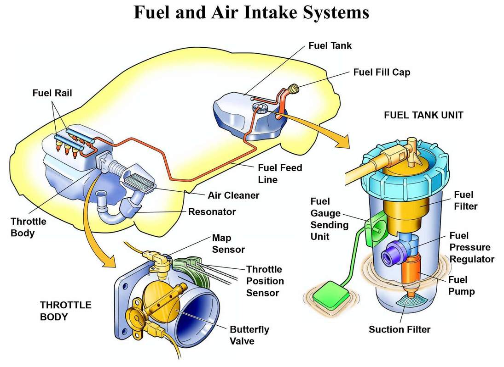
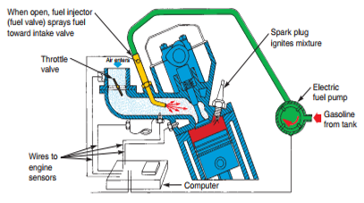
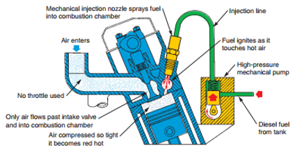
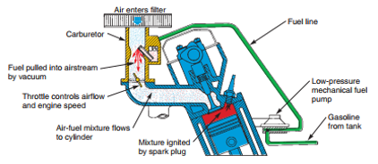

THE FUEL SYSTEM

Figure 3.2. Fuel and Air intake systems
The fuel system must provide the correct mixture of air and fuel for efficient combustion (burning). This system must add the right amount of fuel to the air entering the cylinders. This ensures that a very volatile (burnable) mixture enters the combustion chambers.
The fuel system must also alter the air-fuel ratio (percentage of air and fuel) with changes in operating conditions (engine temperature, speed, load, and other variables).
There are three basic types of automotive fuel systems: gasoline injection systems, diesel injection systems, and carburetor systems. Look at the three illustrations in Figure 3.3, 3.4, 3.5.
Gasoline Injection System
Modern gasoline injection systems use a control module, sensors, and electrically operated fuel injectors (fuel valves) to meter fuel into the engine. This is the most common type of fuel system on gasoline, or spark ignition, engines. See Figure 3.3.

Figure 3.3. Gasoline injection system.
Engine sensors feed information (electrical signals) to computer about engine conditions. Computer can then open injector for right amount of time. This maintains correct air-fuel ratio. Spark plug ignites fuel.
An electric fuel pump forces fuel from the fuel tank to the engine. The control module, reacting to electrical data it receives from the sensors, opens the injectors for the correct amount of time. Fuel sprays from the open injectors, mixing with the air entering the combustion chambers.
A throttle valve controls airflow, engine speed, and engine power. When the throttle valve is open for more engine power output, the computer holds the injectors open longer, allowing more fuel to spray out. When the throttle valve is closed, the computer opens the injectors for only a short period of time, reducing power output. The throttle valve (air valve) is connected to the accelerator pedal. When the pedal is pressed, the throttle valve opens to increase engine power output.
Diesel Injection System
A diesel fuel system is primarily a mechanical system that forces diesel fuel (not gasoline) directly into the combustion chambers. Unlike the gasoline engine, the diesel engine does not use spark plugs to ignite the air-fuel mixture. Instead, it uses the extremely high pressure produced during the compression stroke to heat the air in the combustion chamber. The air is squeezed until it is hot enough to ignite the fuel. Refer to Figure 3.4.

Figure 3.4. Diesel injection system.
High-pressure mechanical pump sprays fuel directly into combustion chamber. Piston squeezes and heats air enough to ignite diesel fuel. Fuel begins to burn as soon as it touches heated air. Note that no throttle valve or spark plug is used. Amount of fuel injected into chamber controls diesel engine power and speed.
When the mechanical pump sprays the diesel fuel into a combustion chamber, the hot air in the chamber causes the fuel begins to burn. The burning fuel expands and forces the piston down on the power stroke. Electronic devices are commonly used to monitor and help control the operation of today’s diesel injection systems.
Carburetor Fuel System
The carburetor fuel system uses engine vacuum (suction) to draw fuel into the engine. The amount of airflow through the carburetor determines the amount of fuel used. This automatically maintains the correct air-fuel ratio. Refer to Figure 3.5.
Either a mechanical or an electric fuel pump draws fuel out of the tank and delivers it to the carburetor. The engine’s intake strokes form a vacuum inside the intake manifold and carburetor. This causes gasoline to be drawn from the carburetor and into the air entering the engine.

Figure 3.5. Carburetor fuel system.
Fuel pump fills carburetor with fuel. When air flows through carburetor, fuel is pulled into engine in correct proportions. Throttle valve controls airflow and engine power output.